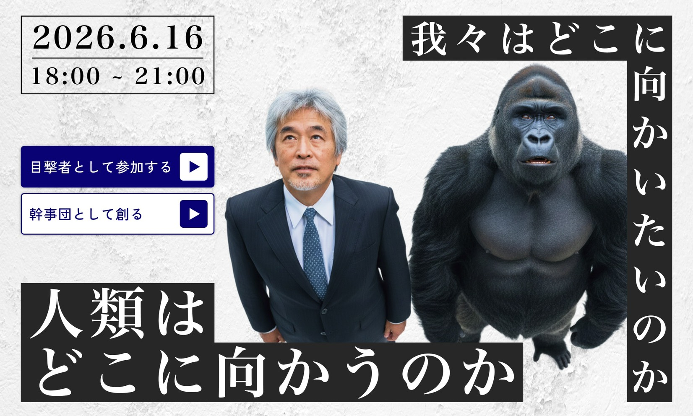

山極 壽一 氏
前京都大学総長 ／ 総合地球環境学研究所所長
霊長類学・人類進化論を専門とし、野生ゴリラの研究を通じて「つながり」と「共感」から人間社会を読み解く知の巨星。

— 答えなき問いに向き合う混沌（カオス）のタベー —
参加費：4,000円（学生料金・早割あり）
日々の小さな違和感や、ふと理解できない出来事に心が動く瞬間が、新しい生き方の扉を開くかもしれません。正解のない混沌とした時代に、私たちはどこへ向かおうとしているのか。安田講堂という歴史の目撃者たちが集う場所で、実践者の話を通じて、明日に繋がる「キッカケ」を見つけてください。
前京都大学総長 ／ 総合地球環境学研究所所長
霊長類学・人類進化論を専門とし、野生ゴリラの研究を通じて「つながり」と「共感」から人間社会を読み解く知の巨星。
素粒子物理学者。ハーバード大学博士。国際共同研究DUNEに参画。
Quark共同創業者・CEO。AI×XRで社会インフラのDXに取り組むエンジニア。
京都・集会所喫茶店「ことぶき」女将。看護師。環境アクションの実践者。
空海研究者。NPO「寺子屋みなてらす」共同創業。東大文卒。
| 日時 | 2026年6月16日（火） 18:00 - 20:00 |
|---|---|
| 会場 | 東京大学本郷キャンパス 安田講堂 |
| 参加費 | 4,000円（早期割引・学生料金設定あり） |